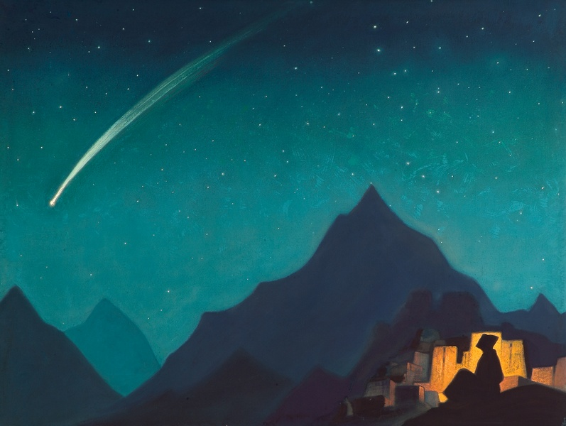

великие художники вдохновлялись звездами. как и мы.
зажги все звёзды

великие художники вдохновлялись звездами. как и мы.
найди комбинацию, чтобы открыть одну из миллиардов идей
ты можешь попробовать что-то еще.
экспериментируй. найди все 20 комбинаций.
еще одна идея найдена.